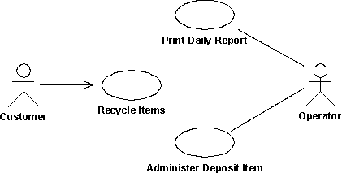

| Рекомендация: Модель прецедентов |
 |
|
| Связанные элементы |
|---|
ОбъяснениеМодель вариантов использования - это модель планируемых функций системы и околосистемных объектов, которая служит в качестве соглашения между заказчиком и разработчиками. Варианты использования представляют связующую нить, проходящую через все этапы разработки системы. Модель вариантов использования является результатом дисциплины Требования, и она же служит входом для дисциплины Анализ и проектирование и дисциплины Тестирование. На приведенной ниже диаграмме показан фрагмент модели вариантов использования для системы Автомат по сбору пустой тары.  Диаграмма вариантов использования, иллюстрирующая пример модели вариантов использования с субъектами и вариантами использования. Существует множество способов моделирования системы, каждый из которых служит определенной цели. Однако, наиболее важная цель модели вариантов использования - донести информацию о поведении системы до заказчика или пользователя. Следовательно, модель должна быть легкой для понимания. Пользователи и любая другая система, которые могут взаимодействовать с данной системой, - это субъекты. Представляя собой пользователей системы, субъекты помогают установить рамки системы и предоставить ясную картину того, что предполагается делать. Варианты использования разрабатываются на основе потребностей субъектов. Это гарантирует, что система получится именно такой, какой ее ожидают пользователи. Развитие модели вариантов использованияКак субъекты, так и варианты использования определяются на основе требований заказчиков и потенциальных пользователей. Затем субъекты и варианты использования необходимо кратко описать. Перед тем как перейти к их подробному описанию, необходимо показать их заказчику, чтобы он проверил, все ли варианты использования и субъекты найдены, и могут ли они в сочетании друг с другом обеспечить его запросы. В среде итеративной разработки выбирается подмножество вариантов использования, которые будут детализироваться на каждой итерации. См. также Задача: Установить приоритет вариантов использования. После того как субъекты и варианты использования найдены, создается подробное описание потока событий каждого варианта использования. Эти описания показывают, как система взаимодействует с субъектами, и что она делает в каждом конкретном случае. Наконец, полная модель вариантов использования (включающая их описания) проверяется, и разработчики и заказчики используют ее для согласования действий, которые должны выполняться системой. Предотвращение функциональной декомпозицииНередко модель вариантов использования сводится к расчленению системы на функции, что нежелательно. Об этом свидетельствуют следующие признаки:
Для того чтобы избежать функциональной декомпозиции, следует убедиться, что с помощью модели вариантов использования можно ответить на следующие вопросы:
Нефункциональные требованияЛегко видеть, что варианты использования представляют собой хороший способ выражения функциональных требований к системе. Но как насчет нефункциональных требований? Что они собой представляют и где формулируются? Нефункциональные требования обычно подразделяются на следующие категории: удобство и простота в использовании, надежность, производительность и заменяемость (см. также Концепция: Требование). Обычно это требования, которые выражают необходимость соответствия законодательству и различным нормам. Кроме того, это могут быть проектные ограничения, обусловленные, например, используемой операционной системой, платформой, проблемами совместимости или любыми применяемыми стандартами приложений. В общем, можно сказать, что любое требование, которое не допускает более одного проектного варианта, должно рассматриваться как проектное ограничение. К отдельному варианту использования применяется множество нефункциональных требований, которые описываются в свойствах этого варианта. В этом случае они формулируются внутри потока событий варианта использования или в качестве специального требования варианта использования (см. Рекомендацию: Вариант использования). Пример: В системе Автомат для сбора пустой тары нефункциональное требование, относящееся к варианту использования Возврат предметов, может быть следующим: Автомат должен распознавать предметы с надежностью более 95 процентов. Часто нефункциональные требования применяются ко всей системе. Такие требования формулируются в дополнительных спецификациях (см. Рабочий продукт: Дополнительные спецификации). Пример: В системе Автомат для сбора пустой тары нефункциональное требование, относящееся ко всей системе, может быть следующим: Автомат должен обслуживать одновременно только одного пользователя. Выбор между "Что" и "Как"Одна из наиболее трудных задач - научиться определять степень детализации, при которой следует "запускать и завершать" вариант использования. Где начинаются функции и варианты использования, а где заканчиваются варианты использования и начинается проектирование? Мы часто говорим, что варианты использования или требования к программному обеспечению должны устанавливать, "что", а не "как" делает система. Рассмотрим следующий график:
Базовый уровень подготовки одного сотрудника может соответствовать "потолку" другого. В зависимости от подготовки все по-разному понимают, что такте "что" и что такое "как". Это обстоятельство необходимо принять во внимание при определении, следует ли исключать определенные подробности из модели вариантов использования. Конкретные и абстрактные варианты использованияМежду конкретным и абстрактным вариантами использования существует различие. Конкретный вариант использования инициируется субъектом и составляет полный поток событий. "Полный" означает, что экземпляр варианта использования выполняет всю операцию, затребованную субъектом. Экземпляры абстрактного варианта использования никогда не создаются сами по себе. Абстрактные варианты использования включаются (см. Рекомендацию: Отношение включения) или расширяются (см. Рекомендацию: Отношение расширения) в другие варианты использования, либо обобщают их (см. Рекомендацию по рабочему продукту: Обобщение вариантов использования). При инициации конкретного варианта использования создается его экземпляр. Этот экземпляр демонстрирует поведение, задаваемое связанными с ним абстрактными вариантами использования. Таким образом, из абстрактных вариантов использования не создается отдельных экземпляров. Важно понимать различие между этими вариантами использования, поскольку субъекты "видят" и инициируют в системе именно конкретные варианты использования. Для того чтобы показать, что вариант использования - абстрактный, его имя выделяется курсивом. Пример:
Вариант использования Создать задание включен в вариант использования Зарегистрировать заказ. Вариант Создать задание - абстрактный. В системе Управление складом абстрактный вариант использования Создать задание включен в вариант использования Зарегистрировать заказ. При инициации варианта использования Зарегистрировать заказ создается его экземпляр, для которого, помимо потока событий Зарегистрировать заказ, выполняется также и поток событий, описанный во включенном варианте использования Создать задание. Вариант использования Создать задание никогда не выполняется сам по себе; он всегда выполняется как часть варианта использования Зарегистрировать заказ или любого другого варианта использования, в который он включен. Следовательно, вариант использования Создать задание - абстрактный. Структурирование модели вариантов использованияСуществуют три основные причины структурирования модели вариантов использования:
Начинать, однако, следует не с создания структуры. Нет смысла структурировать варианты использования, пока нет иных сведений об их поведении, кроме единственного предложения в кратком описании. Сначала необходима хотя бы пошаговая схема потока событий варианта использования, чтобы убедиться, что ваши решения основываются на достаточно точном понимании поведения системы. Для структурирования вариантов использования применяются три вида отношений. Эти отношения позволяют вычленить части вариантов использования, которые могут многократно применяться в других вариантах использования, или которые являются уточнениями или возможностями данного варианта использования. Вариант использования, представляющий собой модификацию, называется дополняющим вариантом использования. Модифицируемый вариант использования называется базовым вариантом использования.
Для того чтобы показать, каким образом субъекты могут конкретизировать друг друга, можно использовать обобщение субъектов. См. также Рекомендацию: Обобщение субъектов. Пример: Рассмотрим часть модели вариантов использования для системы управления заказами. Полезно различать обычного заказчика и Интернет-заказчика, поскольку их свойства несколько отличаются. Однако, поскольку Интернет-заказчик не проявляет всех свойств Заказчика, то можно сказать, что Интернет-заказчик представляет собой конкретизацию Заказчика, указываемую с помощью обобщения субъектов. Конкретные варианты использования в этой диаграмме - это Заказ по телефону, инициируемый субъектом Заказчик, и Заказ через Интернет, инициируемый Интернет-заказчиком. Эти варианты использования представляют собой разновидности более общего варианта использования Разместить заказ, который в данном примере является абстрактным. Вариант использования Заказать каталог представляет собой необязательный сегмент поведения, который не входит в основную цель варианта использования Разместить заказ. Его можно выделить в абстрактный вариант использования, чтобы упростить вариант использования Разместить заказ. Вариант использования Предоставить данные о заказчике - это отдельный сегмент поведения, который выделен в отдельный вариант, поскольку это отдельная функция, а вариант использования Разместить заказ зависит только от ее результата. Вариант использования Предоставить данные о заказчике можно многократно использовать в других вариантах использования. В этом примере оба варианта использования - и Заказать каталог, и Предоставить данные о заказчике - являются абстрактными.
На этой диаграмме вариантов использования показана часть модели вариантов использования для системы управления заказами. В следующей таблице проводится более детальное сравнение всех трех отношений вариантов использования:
Другой аспект организации модели вариантов использования, облегчающий ее понимание, - объединение вариантов использования в пакеты. Модель вариантов использования можно организовать в виде дерева пакетов вариантов использования, "листья" которого - это субъекты или варианты использования. См. также Рекомендацию: Пакет вариантов использования.
На этом графике показана иерархическое дерево модели вариантов использования. Стрелки указывают на возможную принадлежность. Всегда ли варианты использования связываются с субъектами?Выполнение каждого варианта использования включает обмен информацией с одним или несколькими субъектами. Экземпляр варианта использования всегда запускается субъектом, который просит систему выполнить какое-либо действие. Это означает, что у каждого варианта использования должны существовать связи с субъектом. Это необходимо для того, чтобы система предоставляла только те функции, которые требуются пользователю, и ничего больше. Если есть варианты использования, к которым никто не обращается, то это признак того, что в модели вариантов использования или в требованиях что-то неправильно. Однако, есть несколько исключений из этого правила:
Обзорное описаниеОбзорное описание модели вариантов использования должно:
Пример: Ниже приведен пример обзорного описания модели вариантов использования автомата по сбору пустой тары: Эта модель содержит три субъекта и три варианта использования. Основной вариант использования - это Сдать тару, который представляет основное назначение автомата для сбора пустой тары. Поддерживаются следующие варианты использования:
|


© Copyright IBM Corp. 1987, 2006. Все права защищены.. |